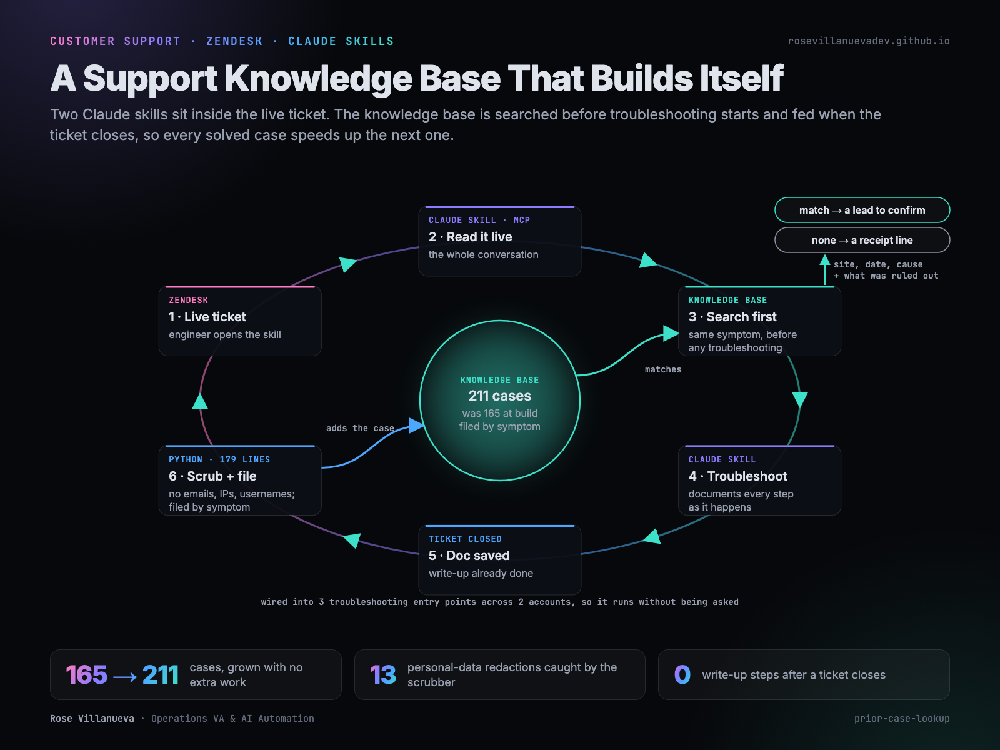

Searchable KB wired into the troubleshooting workflow
Stack
Technical support handled with an AI assistant that reads the live ticket, searches a knowledge base of past interactions before troubleshooting starts, and documents the whole interaction as it happens. Each completed case becomes a record in that knowledge base, so the system gets better at answering with every ticket it handles.

Project scope
A support engineer working technical tickets solves the same shapes of problem repeatedly. Internal guides cover documented procedures. What they leave out is the specific case seen five weeks ago on a different site, including the order things were ruled out in. Keeping that history searchable turns every ticket already resolved into an answer for the next one.
Constraints
It had to fit inside live handling. A support engineer is mid-conversation with a customer, so anything that asks for extra steps afterward would stay empty.
The records are real support interactions, so they had to be safe to search: user data stripped before anything is indexed.
Accuracy mattered more than volume. A match shapes where an investigation goes next, so the system surfaces only cases it can stand behind, and presents each one as a starting point to confirm.
Approach
Two Claude skills run during the interaction itself. The engineer opens one with the Zendesk link, and it reads the conversation live over MCP. Before any troubleshooting is proposed, it searches the knowledge base for cases with the same symptom.
From there it works the ticket alongside the engineer, and documents as it goes. Every check run, every response sent, the full order of elimination, written into a working doc named by ticket ID. The documentation is produced by the assistant during the interaction, not written up by a person afterward, so a record is complete and identically structured every time.
Completed docs become the knowledge base. The corpus fills itself from the work, which is why the search at step one keeps getting more useful.
Implementation
Precision over coverage
A first parser produced 171 records. A stricter one produced 165, each cleanly carrying the symptom. Keeping the smaller, cleaner set was deliberate: a match an engineer can trust is worth more than a bigger index.
Filed by symptom, not by site
Each case is filed under its symptom, with product folders at the top level. A case touching two products is filed under both, and 66 of the 165 are cross-filed that way. A new site showing a familiar symptom is exactly the case worth catching, so the symptom is the key.
The lookup runs on every investigation
The value is in the search happening before a plan is proposed, so it is wired into three troubleshooting entry points across two accounts, plus the global instruction file that loads in every session. Six skill files and two instruction files carry it, so it runs whether or not a skill is explicitly invoked.
Every answer is checkable
A match comes back as site, date and cause in one or two lines, framed as a hypothesis to confirm against the live ticket. It carries the elimination order as well as the answer, because what was ruled out is where the time went. A search that returns nothing prints a receipt line, so the engineer always knows the search ran and what it found.
Scrubbed at build time
Emails, IP addresses and usernames are stripped as the corpus is generated, rather than in a later pass. Verification after hardening the scrubber produced 13 redactions. Site identifiers and ticket IDs are the only identifiers kept, which is what keeps a case recognizable while the index stays free of user data.
Result
Built in a single session on the Python standard library alone, with a 179 line generator. The knowledge base has grown from 165 cases at build to 211 on its own, purely as a by-product of tickets being handled. The lookup fires from every troubleshooting entry point across both accounts.
What transfers
The pattern carries to any support practice where an assistant sits in the live interaction. Three parts travel: have the assistant document the interaction as it happens so the corpus builds itself, put the search above the investigation step so it runs by default, and return a match as a hypothesis with the elimination order attached, so it can be confirmed in seconds.